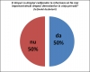
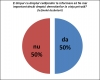

{kind=link}
 Discurs Edwina Nariţa - studentă (N1)
Chestionare încrucișată 2
Discurs Mădălina Manea - studentă (A2)
Discurs Ovidiu Pecican - invitat (N2)
Discurs Edwina Nariţa - studentă (N1)
Chestionare încrucișată 2
Discurs Mădălina Manea - studentă (A2)
Discurs Ovidiu Pecican - invitat (N2)
 

{kind=link}
{kind=link}
{kind=link}
{kind=link}
{kind=link}
Dezbatere publică, Cluj Napoca, 5 aprilie, Aula FSEGA
Echipa Afirmatoare: Nicolae Şera – lect. Dr. La centrul Lingua şi Mădălina Manea – studentă
Echipa Negatoare: Ovidiu Pecican – prof. Dr la Facultatea de Studii Europene şi Edwina Nariţa – studentă
Moderator: lect. Anca Pascu
Discurs Afirmator 1
Nicolae Şera: Doresc să prezint punctul nostru de vedere afirmativ în legatură cu moțiunea. Aş dori să definesc ce înţelegem noi, echipa afirmatoare prin demnitar. Din punctul nostru de vedere, demnitarul este un cetăţean al oricărei ţări, care a fost ales într-o funcţie publică, de regulă politică, deci care lucrează într-o instituţie a statului respectiv. Considerăm că cetăţenii au dreptul să fie informaţi despre viaţa, în integralitatea ei, a demnitarilor, dintr-un simplu drept prevăzut în actele normative ale oricărui stat și, nu în ultimul rând, pentru că părerea corectă a cetăţenilor contează foarte mult în procedura de vot (de aceea am şi definit demnitarul ca o persoană sau personalitate publică din domeniul politic). Avem o serie de argumente ca să ne susţinem ideea.
În primul rând, nu trebuie să uităm că demnitarul se află în slujba cetăţenilor, el este ales de către cetăţenii ţării respective şi el are obligaţii si drepturi pe tot parcursul mandatului său. Aceste obligaţii incumbă, evident, şi ideea de asumare a caracterului public al funcţiei sale. În al doilea rând, suntem convinşi că viaţa publică şi viaţa privată a unui demnitar sunt foarte greu de delimitat. Ştim foarte bine că dânşii lucrează în birouri şi instituţii un anumit timp, dar ei rămân demnitari, oameni politici, personalităţi şi după ce au părăsit acest birou, aceste instituţii, deci am putea spune că 24 de ore din 24, ei sunt demnitarii acestei ţări. De altfel, demnitarii, de cele mai multe ori, se chiar mândresc cu faptele lor pozitive din viaţa lor privată. Desigur că sunt puţin supăraţi dacă presa, mass-media în general oferă publicului informaţii despre acţiunile lor din viaţa privată care incumbă libertăţilor cetăţenilor. V-aş da un exemplu: cheltuirea banilor din fonduri publice pentru scopuri personale, şi exemplele abundă în acest sens. Să nu uităm că demnitarii, din punctul nostru de vedere, functionează ca nişte personalităţi, respectiv ca nişte modele pentru noi. Ei sunt modele atunci când îi alegem, o dată la 4 ani sau la un ciclu electoral, dar ei rămân aceste modele, prin prestaţia lor publică, dar şi privată, pe tot parcursul mandatului lor. Considerăm că informaţiile în acest sens ar fi utile pentru noi, ca să rămână în continuare modele pentru noi. Nu în ultimul rând, un cetăţean care doreşte să devină demnitar, îşi asumă liber si nestingherit, neîmpins de la spate, această funcţie. Vorbind între oameni adulţi, această asumare induce şi ideea că o parte a vieţii lor, nu în totalitate, desigur, este vizibilă pentru cetăţenii ţării respective. Şi ultimul nostru argument, nu neapărat cel mai puţin important, ar fi argumentul democraţiei, credem noi. În sensul că dacă noi, ca şi cetăţeni, am fi informaţi de viaţa publică şi viaţa privată a demnitarilor, am putea elimina sentimentul de neîncredere pe care îl putem avea în anumiţi demnitari. Asta ar atrage după sine creşterea prezenţei la vot a cetăţenilor, adică o mai bună implicare civică a cetăţenilor, de care unii se tot plâng, şi pe bună dreptate, şi ar legitima mult mai bine aleşii, demnitarii unei ţări. Vă mulţumesc!
Anca Pascu: - Mulţumim echipei afirmatoare. Acum echipa negatoare are la dispoziţie 3 minute pentru a adresa întrebări echipei negatoare.
Chestionare încrucișată 1:
Edwina Nariţa: - Una dintre primele întrebări pe care dorim să le adresăm echipei afirmatoare ar fi: Care aspecte ale vieţii private a demnitarilor aţi dori să fie făcute publice?
Mădălina Manea: - Elementele din viaţa privată pe care considerăm că cetăţenii ar fi îndreptăţiţi să le cunoască sunt, în primul rând, cele legate de sănătate şi, în al doilea rând, legate de viaţa intimă, dar doar în măsura în care acest lucru interferează cu viaţa publică a demnitarului.
Nicolae Şera: As adăuga eu un alt aspect – nu pot să uit că lucrez la Facultatea de Ştiinţe Economice – şi demnitarii se laudă de cele mai multe ori prin aşa-numita declaraţie de avere, care este pusă pe site-urile lumii, si toată lumea poate să vadă aceste informaţii. Uită să justifice de unde provin aceşti bani, şi, pe perioada mandatului lor, această declaraţie de avere de cele mai puţine ori se schimbă şi avem mici reţineri.
Edwina Nariţa: - De asemenea,aş vrea să ştiu dacă vorbim despre demnitari care candidează, sau demnitari care sunt deja aleşi?
Nicolae Şera: - Din punctul nostru de vedere, demnitar este şi cel care candidează, este viitorul demnitar. Este demnitar si cel care îndeplineşte o funcţie publică în domeniul pe care l-am precizat, şi anume, politic.
Ovidiu Pecican: - Şi foştii?
Nicolae Şera: - Chiar si foştii...
Ovidiu Pecican: - Intrebarea mea era “Şi foştii demnitari?”
Nicolae Şera: - Chiar şi foştii - ne gândim la foştii preşedinţi ai unei ţări, prim-miniştri, miniştri şi, de multe ori, chiar dacă atunci când erau ei în funcţie nu se puteau da informații publicului, după o perioadă de x ani, publicul află ce este de-ajuns.
Discurs Negator 1
Edwina Nariţa: - Ca echipă negatoare, plecăm de la premisele stabilite împreună cu colegii noştri, că vorbim atât despre demnitarii care candidează pentru o funcţie, cât si despre cei care sunt deja aleşi. În primul rând, considerăm că pentru cetăţeni este foarte important, sau cel mai important ca demnitarii să îi reprezinte, şi în cazul în care această cerinţă nu este îndeplinită, ei să fie traşi la răspundere. O să dorim a continua aici să vă demonstrăm cum de fapt, nici un aspect al vieţii private, fie că vorbim de sănătate, viaţă intimă sau condiţie materială, nu-i oferă cetăţeanului modalitatea de a-l trage la răspundere pe demnitar. În primul rand, să vorbim despre sănătate. Doar pentru că un om este bolnav, nu înseamnă ca acel om nu este capabil să-şi îndeplinească o funcţie, sau un loc de muncă sau anumite cerinţe ale acestuia. Putem oferi varii exemple în acest sens. Cel mai bun exemplu este Roosevelt. A dus la final patru mandate, deşi suferea de numeroase boli. Asta nu înseamnă că el este mai puţin capabil; ba chiar putem vorbi despre ceea ce el a făcut în legatură cu Arabia Saudita, în ciuda faptului că suferea de un handicap. Ba mai mult, faptul că facem publică o boală de care un candidat suferă, poate sa-i aducă acestuia nenumărate trăiri interioare şi psihologice, deoarece el se poate simţi inferior, desi nu e mai puţin capabil. Şi nu putem vorbi despre speranţa de viaţă, pentru că vedem în foarte multe cazuri medici care se înşeală. Considerăm un alt exemplu ca fiind Dwight Eisenhower. Deşi s-a preconizat că nu va trece cel de-al doilea mandat, acesta a dus la final 8 ani după închiderea acestuia. Deci nici previziunile medicilor nu pot fi luate întotodeauna de bune. Referitor la viaţa intimă: considerăm că ceea ce face un om în spatele uşilor închise atunci când este vorba de viaţa lui personală, nu influenţează modalitatea de a gândi la locul de muncă. Putem numi enorm de mulţi oameni foarte capabili care poate au mai mult de o nevastă şi în plus putem da exemple de ţări în care aceasta este o practică adecvată prin lege. Ceea ce face omul este strict de viaţa familială. În ceea ce priveşte condiţia medicală: Fiecare om sau cetăţean al unui stat este supus unor anumite legi. El este controlat de instituţii abilitate. Asemenea instituţii ar trebui să îi controleze şi pe demnitarii publici. Cât timp aceste instituţii îşi fac treaba, ei ar trebui să fie traşi la raspundere exact ca orice alt cetăţean. În plus, după încheierea unui mandat, care durează doar o anumită perioadă de timp, acest om redevine un simplu cetăţean. Nu ar trebui să fie făcută publică viaţa privată pentru că este doar o slujbă. Slujba se încheie după cele 8 ore. Atâta timp cât in cele 8 ore omul îşi face treaba foarte bine, nimănui nu îi pasă ce face la încheierea programului. Deci dacă voi consideraţi că există orice posibilitate în care viaţa privată a unui om să îi influenţeze capacitatea acestuia la locul de muncă, atunci da, este dreptul să ştim tot ceea ce face. Dacă noi îi considerăm profesionişti cu adevărat, atunci nu.
Chestionare încrucișată 2 :
Nicolae Şera: - Aş dori să pun două întrebări… poate că vor fi chiar trei. Referitor la boală : Suntem de acord că o persoană care suferă de anumite boli poate să îndeplinească funcţii publice, şi chiar foarte bine. Nu toate bolile afectează capacităţile raţionale ale omului. Dar, ştiind eu, cetăţean, că X demnitar, viitor demnitar suferă de o anumită boală, oare nu este un argument afectiv care să mă determine ca din milă să îl aleg? Este o întrebare…
Edwina Nariţa: - Am oferit un exemplu în care o boală, deşi era facută publică, nu a afectat decizia cetăţenilor de a-l realege în funcţie pe un preşedinte. Echipa negatoare susţine faptul că demnitarii publici ar trebui să treacă printr-o serie de teste psihologice, deoarece considerăm că doar aceste aspecte ar putea influenţa capacitatea lor de decizie. Ba chiar mai mult, susţinem faptul că aceste teste ar trebui făcute şi de-a lungul mandatului, deoarece sunt supuşi la un stres permanent. Dar bolile corpului, care nu afectează capacitatea de a lua decizii a acestora nu ar trebui făcute publice.
Ovidiu Pecican: - Vreau să adaug, ca istoric, un fapt - anume că în perioada celei mai mari prosperităţi a sa, Romania a fost condusă de Dimitrie Sturza, era în timpul lui Carol 1, înainte de Primul Război Mondial. S-a dovedit că acesta, în ultimul său mandat, era complet sclerozat. Asta nu a împiedicat Romania să prospere în acea perioadă. Iată un caz paradoxal care merită reţinut în minte. Totuşi, acum merită amintit şi faptul că în perioada marii crize economice , guvernul era condus de ţărăniştii lui Iuliu Maniu, un om nu doar integru, ci şi foarte lucid, şi asta nu a ajutat prea mult pentru redresarea României din punct de vedere economic.
Nicolae Şera: - Aş mai pune o întrebare. Partea adversă, ca să spun aşa, a invocat faptul că instituţiile statului ar trebui să-şi facă treaba de verificare din mai multe puncte de vedere, şi dacă dânşii consideră propice, atunci să dea publicităţii aceste informaţii. Dacă dânşii cred că asta ar afecta imaginea unei persoane publice, demnitare, întrebarea mea este dacă cunoaşteţi cazuri în care demnitari au abuzat de funcţia pe care o au şi şi-au scos copiii de la arest, de exemplu. Şi cum au intervenit instituţiile statului in acest caz?
Edwina Nariţa: - Există numeroase cazuri în care se face abuz de putere, sau abuz de funcţie, doar că vorbim despre demnitari, nu despre modul în care instituţiile funcţionează. Faptul că o instituţie este sau nu este capabilă, nu este moţiunea pe care o discutăm astăzi aici. Dacă instituţiile ar funcţiona conform statutului şi legilor după care ele sunt guvernate, aceste cazuri nu s-ar întâmpla deoarece este democraţie şi ierarhia ar trebui să-şi spună cuvântul.
Discurs Afirmator 2
Mădălina Manea: - Eu şi domnul Şera suntem aici pentru a vă arăta cum este foarte important dreptul la informare al cetăţenilor, ba chiar mai mult, poate fi mai important decât dreptul la viaţă privată al demnitarilor. Să vedem în ce context se petrec lucrurile acestea. Argumentele pe care le-am adus noi au fost următoarele: primul, faptul că demnitarul are o anumită responsabilitate faţă de cetăţeni. El este plătit ca să îşi îndeplinească slujba şi ca orice angajat, să spunem, este dator cu explicaţii celui care Îl angajează. În acest caz avem cetăţenii. Şi pentru acest motiv el trebuie să răspundă pentru acţiunile sale. Următorul argument pe care l-am adus este că există o distincţie destul de neclară între viaţa publică şi viaţa privată. Aceste lucruri se petrec fie din cauză că de multe ori persoanele din apropierea figurii publice respective sunt ele însele figuri publice, şi avem exemplul Carlei Bruni, fie pentru că demnitarii respectivi aleg să amestece viaţa publică cu viaţa privată. Şi un exemplu este Obama, care îşi plimbă familia peste tot şi care afişează această imagine de familie fericită. În momentul în care un demnitar îşi aduce familia, sau orice element din viaţa privată, în ochii publicului, considerăm că este necesar ca cetăţenii înşişi să aibă dreptul să verifice dacă această imagine este reală sau nu. Apoi, care elemente mai exact din viata privată considerăm noi că sunt relevante ? După cum am spus - sănătatea, viaţa intimă şi nu în ultimul rând, declaraţia de avere, respectiv condiţia materială şi cum evoluează ea în timpul mandatului. Boala nu înseamnă că o persoană nu este capabilă, dimpotrivă! O boala fizică nu este un indiciu că abilitățile psihice ale unui demnitar sunt afectate. Însă, vă spuneam că cetăţenii ar trebui să aibă dreptul să cunoască acest lucru şi să decidă ei dacă chiar contează sau nu boala respectivă în îndeplinirea funcţiei. De ce? Pentru că sunt anumite indicaţii legate de acestea şi avem un exemplu în reprezentarea ţării. Să vedem cum Boris Elţin, care a fost preşedinte al Rusiei între ‘91 şi’ 99, a fost acuzat în nenumărate rânduri de presa internaţională că ar apărea beat în public. Ei bine, considerăm că cetăţenii ar fi trebuit să ştie că el suferea de fapt de o boală nervoasă, şi că acest lucru îi determina dezechilibrul, incoerența şi aşa mai departe. Vedem, deci, cum aici aspectul acesta al sănătăţii a afectat imaginea Rusiei în străinătate. Ca să nu mai vorbim de faptul că există şi alte exemple de politicieni nominalizati pentru inalte functii (cum ar fi pozitia de vicepresedinte al Statelor Unite spre exemplu) care s-au retras pentru că a aflat că un ziar urma să publice date legate de starea sa de sănătate -el suferea de o depresie- și a fost nevoit mai apoi să recunoască el însuşi și să se retragă. Ce implicații are acest lucru? Sunt mai multe aspecte: primul, stresul pe care îl suportă acest viitor demnitar, temându-se că se va afla de boala lui. Apoi, apar tot felul de insinuări şi acuze nejustificate, cum a fost cazul cu dependența de alcool a preşedintele respectiv, deși nu era adevarat. O dată facută publică informația, însă, apare o neîncredere în acest demnritar. Apoi am vorbit de faptul că demnitarii sunt un model, şi aici putem vorbi de două lucruri: unu - fie ei afişează o imagine şi de fapt aceasta nu este adevarată, şi avem de-a face cu ipocrizia, iar cetăţenii au dreptul să ştie cum este cel pe care îl vor alege, sau l-au ales şi, în al doilea rând - cetăţenii au un set de valori şi anumite criterii după care evaluează, şi ar trebui să se faca publice aspecte legate de viaţa demnitarilor pentru a şti dacă considerăm că sunt capabili sau nu să îndeplinească o anumită poziţie. De asemenea, echipa negatoare ne-a spus că demnitarul, imediat ce işi termină slujba nu mai este demnitar, nu mai poate fi tras la răspundere. Noi vorbim de perioada cât a fost în timpul slujbei, chiar dacă acum a terminat-o.
Discurs Negator 2
Ovidiu Pecican: - N-am idee ce efecte retorice sunt îngăduite cu acest prilej. Orice? (Edwina Nariţa: Da) Atunci revin să gesticulez, să-ncerc să-mi smulg părul din cap. Bine! Ideea e urmatoarea: e fascinant discursul susţinătorilor presei, mai ales că şi eu mai scriu în presă din când în când şi aproape că m-au convins. Există totuşi câteva mici probleme. Şi principala problemă pe care o văd eu este că demnitarii sunt oameni ca şi noi, ei se aleg dintre noi. Nu m-aş mira să o vad pe colega mea în curând un demnitar. Ar arăta foarte bine în guvern, în timp ce colega va ajunge probabil în presă o foarte bună persoană, eu ştiu, PR. Acuma ce vreau să zic: fiind ca şi noi, au acelaşi drept ca şi noi, exact ca oricare dintre noi, la intimitate. De ce? Pentru că viaţa omului este alcătuită din viaţa publică si viaţa privată. Dacă iei o slujbă, chiar şi în slujba unui partid, a unei administraţii, nu înseamnă că renunţi la viaţa ta privată. Ai nevoie de puţină caldură, mai ales că te duci să slujeşti. A fi un slujbaş al statului, sau a fi un demnitar, în oricare dintre înţelesurile acestui cuvânt înseamnă de fapt, să te pui în slujba comunităţii, a oamenilor. Prima răsplată nu e banul, nu e accesul la anumite privilegii, este, cum să vă spun eu, respectul. Respectul şi căldura cu care eşti întâmpinat. E absolut obligatoriu să îţi dai seama de ceea ce faci, cel puţin într-o democraţie funcţională. Dar există o limită până la care poţi fi interogat asupra activităţilor tale inclusiv private, şi acea limită este dată foarte clar de interesul public. Avem de altfel şi o lege în acest sens: legea informaţiilor de interes public. Acolo sunt destul de clar stipulate aceste limite până la care putem merge. Sigur că putem fi fascinaţi de un preşedinte care în Biroul Oval exersează ţigările de foi în tot felul de scopuri bizare. Dar, dacă nu s-ar petrece aceste lucruri în Biroul Oval, și dacă nu ar fi vorba despre o asemenea persoană, oare aţi socoti legitim să fiţi, cum să vă spun eu, sub supraveghere permanentă? Mai nou, media încearcă să ne vândă inclusiv această formulă de supraveghere permanentă ca pe un show minunat. Big Brother is watching you. S-a promovat chiar denumirea de Big Brother de la George Orwell care o foloseşte într-un roman care descrie o teroare totalitară. Nu-i posibil aşa ceva! Demnitarii nu sunt scutiţi, nefiind marţieni, nefiind, eu ştiu, veniţi din Star Trek sau din altă parte, nu sunt scutiţi de drepturile omului. Drepturile lor trebuiesc respectate ca şi ale noastre, şi ei apără şi drepturile noastre. Dacă sunt abuzuri, trebuie sancţionate – pe linie de serviciu. Dacă demnitarii nu sunt sfinți, săracii, înseamnă că nu sunt sfinţi. Dacă ar fi sfinţi, ar ajunge în Rai, nu în guvern, sau eu ştiu, în oficii, în funcţii publice. Să fie modele? E minunat. Sună foarte bine. Dar pe urmă iar mă întorc la Biblie şi zic conform cuvântului biblic “să nu-ţi faci chip cioplit”. Model, în ce limite? Un model în comportament? Un model de eficienţă aş dori eu şi de onestitate, dacă e posibil. E excelent că avem o presă liberă, că ea poate fi câinele de pază al democraţiei, dar până la marginea patului meu, până la marginea patului meu de spital, până la marginea patului meu dintr-o reşedinţă de vacanţă, până… nu mă enervez! În fine! Cred că, pe de altă parte, ar trebui ca viaţa noastră publică – a noastră, a oamenilor în general de pe planetă- sa fie scutită de caracterul prea invaziv al suspiciunii. E bine să fii suspicios, filozofia ne invaţă asta: pui mereu întrebări care te ajută să înaintezi în cunoaştere, dar cu o limită, iarăşi. Iar acea limită este dată de iubirea faţă de oameni, de încrederea în ei şi de tot ceea ce inseamnă valoare pozitivă. Nu-i putem controla în felul ăla şi mergând din faţă spre înapoi, astfel încât aş zice eu: e splendid că putem convieţui cu presa. Atenţie! Noi o chemăm, încercăm să mediatizăm, să dobândim un impact mai mare al gesturilor noastre chiar şi cele de mai mică relevanţă publică, dar care ne pot acredita ca personaje chiar interesante. Eu zic “noi” acum, vorbesc în numele demnitarilor, nu al meu, desigur, dar există o limită. E senzaţional să ai reflectoarele la îndemână, să fii filmat. Însă după asta aş merge şi eu acasă că vreau să mănânc o pizza, nu vreau să râdă toată populaţia ţării că am mâncat pizza, deci o mâncare italienească, internaţionalizată, în loc de sarmale. Cred că mă veţi înţelege în acest sens. Poate nu e foarte important nici dacă sunt un demnitar care provine dintr-o familie săracă, rămasă săracă şi care mănâncă pâine cu untură acasă. Mulţumesc!
Anca Pascu: - Vreau să le mulţumesc celor patru pentru această dezbatere, zic eu interesantă şi palpitantă, în acelaşi timp, cu un final interesant. Vreau, înainte de a vota, să vă rog să le adresaţi întrebări. Voi da un microfon în sală, şi unul va ramâne aici.
Intervenţie (Elena Lomoră): - Vreau să pun o întrebare echipei negatoare, şi anume: dumneavoastră consideraţi că era mai în regulă dacă aventurile demnitarului Berlusconi ar fi rămas în sfera privată şi nu ar fi fost făcute publice, dat fiind faptul că erau cu o minoră?
Edwina Nariţa: - Aventurile domnului Silvio Berlusconi erau ilegale, ţineau de viaţa privată. Faptul că intreţinea relaţii sexuale cu o minoră este o ilegalitate conform legilor. El trebuia pedepsit ca şi cetăţean, nu neapărat ca demnitar. Orice om de pe planeta asta care intreţine relaţii sexuale cu o minoră ar trebui pedepsit, nu doar el pentru că era Silvio Berlusconi. (Ovidiu Pecican: “Aviz tuturor amatorilor”)
Anca Pascu: - Alte întrebări din sală, vă rugăm. Să nu fiţi timizi, vă rugăm.
Interventie: - Mulţumesc! Ambelor echipe vreau să le adresez o întrebare, pentru că au câte un profesor în componenţă. Aş vrea să vă întreb dacă cumva consideraţi că meseria dumneavoastră de profesor este demnitate, unu, şi doi, dacă este publică, şi 3, dacă este şi demnitate şi publică... şi de demnitate publică.
Ovidiu Pecican: - Da, are o relevanţă publică această meserie şi este subîntinsă de o componentă care ţine de demnitate. Cred că de fapt nu doar la nivel academic, ci încă de la clasa întâi, omuleţul pe care îl tratăm este un om care are dreptul să i se respecte drepturile, să fie pus în valoare. El participă la un act al ideii, un act educativ, aşa că este important să îi urmăreşti creşterea, nu descreşterea, ca a Imperiului Otoman. Aaşa încât, da, are relevanţă publică, este subîntinsă de demnitate această meserie de dascăl, în sens foarte larg, în toate gradele şi nivelurile, de la mică educatoare, până la marele academician care predă într-o aulă – nu este cazul nostru, dar totuşi, nu e o demnitate publică în accepţiunea în care s-a definit aici termenul de demnitar. Sigur că dacă un profesor, să zicem dintr-o aulă academică, ajunge premier fiind expert în ştiinţe juridice sau în politologie, lucrurile se împletesc. Se împletesc într-o manieră interesantă. Ele devin chiar foarte relevante atunci când profesorul respectiv taie salariile altor profesori, dar e de evitat acest exemplu cred.
Nicolae Şera: - În principiu, eu sunt foarte de acord cu ce a spus colegul negator, şi cred totuşi că dacă - deci mă refer exclusiv la persoana mea –dacă aş avea o boală psihică vizibilă, sau invizibilă, cred că nici nu ar trebui foarte tare să o afirm în public, că publicul şi-ar da seama, şi m-ar elimina. E valabil pentru mai multe cadre.
Ovidiu Pecican: - Depinde şi de profilul bolii. Cu nevroza mai merge, cu psihozele nu prea. Nevroticii-s minuţioşi aşa.
Anca Pascu: - Vă mulțumim pentru întrebări și pentru răspunsuri.